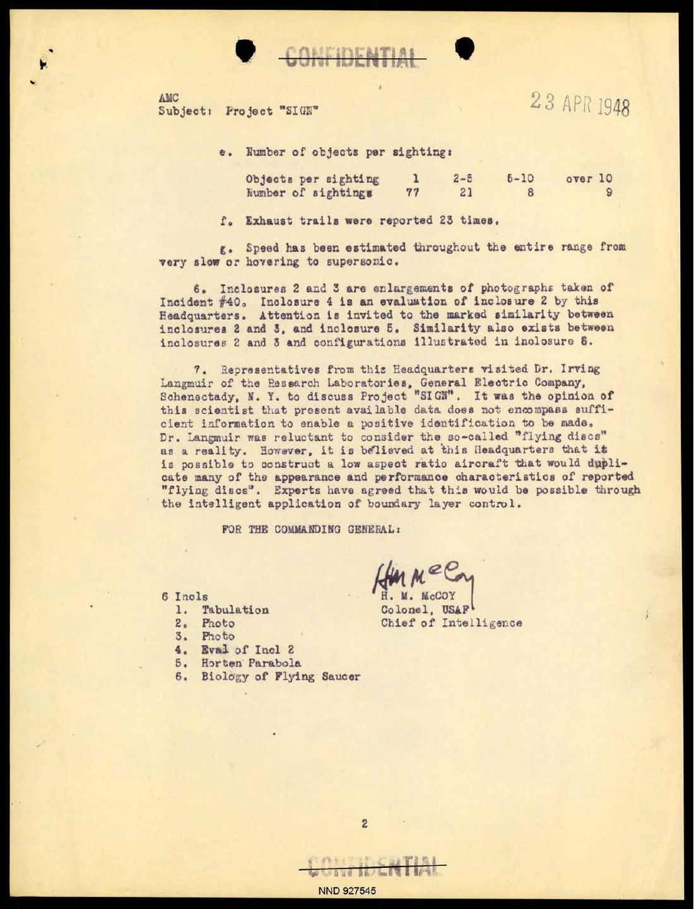

You are working from the 23 April 1948 Project SIGN progress report. Its first enclosure is a multi-part table of reports available through 1 February 1948. Your task is to audit the recorded variables statistically, not to decide what the reported objects were.
Question under review
Does the sample provide evidence against a proposed population mean or proportion?
Evidence used in this file
The same fixed sample of 36 exact object counts from Case File 3 is used. Its mean is \(1.944\), and 25 of the 36 entries report exactly one object, giving \(\hat p=0.6944\).
Current assignment
Translate verbal claims into null and alternative hypotheses. Test \(H_0:\mu=2\) against a two-sided alternative and \(H_0:p=0.50\) against a right-sided alternative. Then connect each decision to its tail area and to the earlier confidence interval.
Investigation log: what has already been established
The 95% confidence interval for the mean was approximately \((0.955,2.934)\), and the 95% interval for the single-object proportion was approximately \((0.544,0.845)\). Both intervals contained the known empirical values from the full 108-count table.
See the evidence behind this lab
The null values in this lab are proposed numerical benchmarks. They are tested against a sample drawn from the coded empirical population constructed from the source table.


Browse the row-level source table
The hypotheses concern parameters of the course-defined empirical population, not claims made by the authors of the 1948 report.

Statistical briefing
This activity continues the Project Sign confidence-interval lab. The 108 exact object counts are treated as an empirical population, and you will use the same fixed sample of 36 values.
Objectives
- Write null and alternative hypotheses and identify the test direction.
- Carry out a one-sample \(z\)-test for a population mean.
- Carry out a one-sample \(z\)-test for a population proportion.
- Interpret a \(p\)-value and compare it with \(\alpha\).
- Connect a two-tailed hypothesis test with a confidence interval.
Reference formulas
Part 1. Hypotheses and test direction
A test begins with a claim and a direction before any arithmetic is performed. The alternative hypothesis determines which tail or tails count as more extreme.
Choose the correct test type for each alternative hypothesis.
Part 2. One-sample \(z\)-test for a mean
The mean test asks whether the observed sample mean is unusually far from \(2\) when \(H_0:\mu=2\) is treated as the reference model.
A claim states that the mean number of objects reported is \(2\). Test whether the mean differs from \(2\).
Use \(\alpha=0.05\), \(n=36\), and the known empirical-population standard deviation \(\sigma=3.028\).
Decision at \(\alpha=0.05\):
Part 3. One-sample \(z\)-test for a proportion
The same records answer a different question after they are recoded as single-object or not. A different parameter can produce a different statistical conclusion without contradiction.
Call an entry a success when it reports exactly one object. Test whether more than half of the entries in the empirical population report exactly one object.
Use \(\alpha=0.05\). In the sample, 25 of the 36 entries are successes.
Decision at \(\alpha=0.05\):
Why does the test use \(p_0\) in the standard error?
Part 4. See the \(p\)-values as tail areas
The p-value is an area under the null distribution. Drawing the tail regions makes “at least as extreme” visible rather than leaving it as a calculator output.
The simulation below generates 5,000 standard normal \(z\)-scores under \(H_0\). It counts the simulated values at least as extreme as the observed test statistic.
Mean test: two tails
Proportion test: right tail
Part 5. Compare the two conclusions
A failure to reject is not proof of the null hypothesis. It means that the observed statistic was not sufficiently unusual under the stated null model.
| Question | Test | Decision |
|---|---|---|
| Does the mean differ from 2? | \(H_0:\mu=2\) vs. \(H_a:\mu\ne2\) | Fail to reject \(H_0\) |
| Do more than half report exactly one object? | \(H_0:p=0.50\) vs. \(H_a:p>0.50\) | Reject \(H_0\) |
Which is a correct interpretation of failing to reject \(H_0\)?
Final response